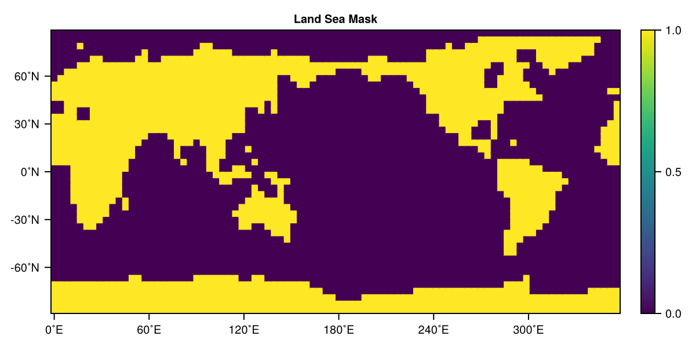
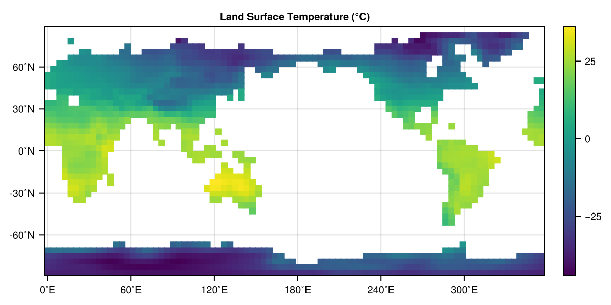
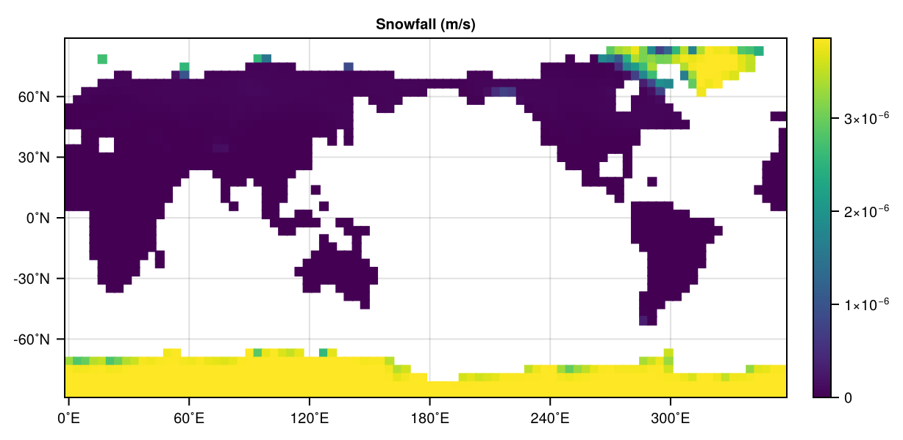
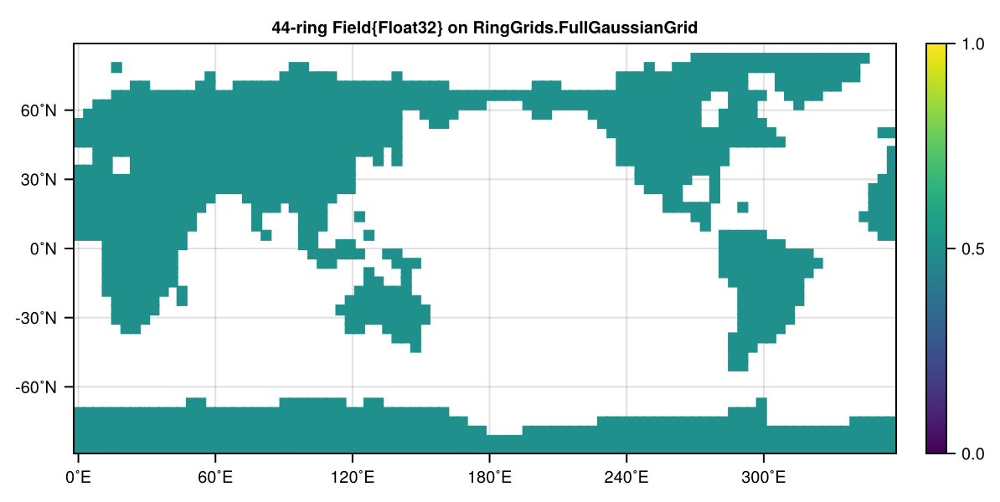

Implementing a degree-day snow melt model
We have seen already a simple example of how to define and run an exponential growth model with external forcing following the Terrarium AbstractModel interface.
But typically, our computations will be a bit more complicated than that, and we can't just rely on simple broadcasting operations like what we did in compute_tendencies! above. The reason for this is simply efficiency: it is (usually) more efficient to bundle together many scalar operations into operations that can be massively parallelized. But how do we actually achieve this?
Writing kernelized-code in Terrarium
Terrarium.jl is a device-agnostic modelling framework that runs across different architectures like x86 CPUs, ARM CPUs, but also most importantly, GPUs. To achieve this wide compatibility, we rely on KernelAbstractions.jl to turn our heavy computations into parallelizable kernels. But don't panic! We provide a lot of utilities and functions that help make this easy and ensure that the resulting models are fast and efficient as well.
In simple terms, kernels can be thought of as the inner body of a for-loop. The kernel function implements one iteration of that loop; in Terrarium, the kernel function implements the computation for a single column / grid point. To execute the computation the kernel is "launched" on the device we set up when constructing the model (per default your CPU). When configuring the kernel launch, we also set the range this kernel should iterate over (usually all points on the grid), and hand over all arguments required by the kernel function.
To demonstrate this process, and all tools we have available to facilitate it, we will implement a simplified degree day snow model.
Degree Day Model
A degree day model models snow melt by assuming that snow storage or snow water equivalent decreases linearly over time with the temperature when it is above its melting point. Following the formulation of [2] we denote the snow mass balance as
\[\frac{dS}{dt} = P - M\]
with snow storage $S \in \mathbb{R}^+$, the snow input $P$ and melt rate $M$ modelled as
\[M = \begin{cases} 0 & \text{if } T \leq T_k, \\ k(T - T_k) & \text{if } T > T_k \end{cases}\]
where $k$ is the degree-day factor/parameter and $T_k$ is a parameter for the melting point of snow on the ground.
For our experiment we will use the degree day model with a prescribed surface air temperature $T$, and initialize a global model with snow everywhere to watch the snow melt.
using Terrarium
using KernelAbstractions
using RingGrids, NCDatasets
# output writers
using Oceananigans: JLD2Writer, TimeInterval, prettytime
using Oceananigans.Units: seconds, days
using JLD2
# plotting
using CairoMakie, GeoMakie
import DisplayAsYour first kernel-accelerated model
First, we need to define our model that holds the snow melting process similar to how we constructed the ExpModel:
@kwdef struct DegreeDaySnow{NF} <: Terrarium.AbstractProcess{NF}
"Degree-day factor [m/(Ks)]"
k::NF = 0.005 / (24 * 60 * 60)
"Melting point of snow on the ground [°C]"
T_melt::NF = 0.0
endTerrarium.variables(model::DegreeDaySnow{NF}) where {NF} = (
Terrarium.input(:air_temperature, XY(), default = NF(0), units = u"°C", desc = "Near-surface air temperature in °C"),
Terrarium.input(:snow_fall, XY(), default = NF(0), units = u"m/s", desc = "snow fall rate in m/s"),
Terrarium.prognostic(:snow_storage, XY(), units = u"m", desc = "Snow water equivalent in m"),
)
@kwdef struct SnowModel{NF, Grid <: Terrarium.AbstractLandGrid{NF}, Pro, Init, TS <: Terrarium.AbstractTimeStepper} <: Terrarium.AbstractModel{NF, Grid}
"Spatial grid on which state variables are discretized"
grid::Grid
"Snow melting process"
snow_melt::Pro = DegreeDaySnow()
"Model initializer"
initializer::Init = DefaultInitializer(eltype(grid))
"Time stepper (e.g. `ForwardEuler`, `Heun`, or `IMEX`)"
timestepper::TS = ForwardEuler(eltype(grid))
endTerrarium.variables(model::SnowModel) = (
Terrarium.variables(model.snow_melt)...,
)Then, we need to define the dynamics. Typically, we launch kernels on the level of AbstractProcesses in Terrarium. These processes then might have further parameterizations attached to them that need to be computed. We have a few utilities and conventions for this purpose:
- Kernels are typically named
compute_*_kernel!, and follow a signaturecompute_*_kernel!(output_fields, grid, fields, processes..., args...).
We always hand over only the minimum set of fields that the process (and its dependencies) actually need. You can either assemble these fields manually, or use the convenience function get_fields(state, processes...) that returns all the fields that are defined in the variables of the respective processes or the model. Only the minimum set of fields is used, as handing over the full state to the kernels would come with high computational overhead due to the need to copy type information from the host device to the GPU.
- Kernels are launched with the
launch!that defines whether the kernel is launched over all columns/grid pointsXY(2D) or also over all vertical layersXYZ(3D) of the modelgrid. See Kernel programming for more details. - The functions that define the kernels with
@kernelare supposed to be very minimal functions that forward the actual computation to pointwise compute functions that compute the needed quantity for the grid pointsi,j. This increases the reusability and composability of our model code. These compute functions are really the core of the implementation of our model and similar to functions you might find in more traditional land model, called from within a loop.They compute the action of a process for a single grid point given inputs and parameters. - The compute functions follow either a mutating pattern
compute_*!(out, i, j, grid, fields, processes..., args...)or a non-mutating patterncompute_*(i, j, grid, fields, processes..., args...). As a general rule, the mutating functions should defer all actual computations to non-mutating functions and then store the results in theFields given in the first argument.
Let's put all of this in practice now for our example.
First, we need to define the compute_tendencies! for our Model as before, then we launch the kernel in the compute_tendencies! of our Process. For this model we don't actually have auxiliary variables, so we don't have to actually define a compute_auxiliary! in this case, as we inherit a default compute_auxiliary!(args...) = nothing.
function Terrarium.compute_tendencies!(state, model::SnowModel)
compute_tendencies!(state, model.grid, model.snow_melt)
return nothing
endfunction Terrarium.compute_tendencies!(
state,
grid,
snow_melt::DegreeDaySnow
)
fields = get_fields(state, snow_melt)
return Terrarium.launch!(grid, XY, compute_snow_flux!, state.tendencies, fields, snow_melt)
end@kernel function compute_snow_flux!(tend, grid, fields, snow_melt)
i, j = @index(Global, NTuple)
tend.snow_storage[i, j] = compute_snow_flux_tendency(i, j, grid, fields, snow_melt)
endcompute_snow_flux! (generic function with 4 methods)Terrarium.compute_auxiliary!(state, model::SnowModel) = nothing
Terrarium.compute_auxiliary!(state, grid, model::DegreeDaySnow) = nothingThe @index(Global, NTuple) is a function from KernelAbstractions that gets us the current index of our iteration, so the column we compute.
With that, we can also define our compute_snow_flux_tendency function that does the actual computation:
function compute_snow_flux_tendency(i, j, grid, fields, snow_melt)
# get the variables we need
P = fields.snow_fall[i, j]
T = fields.air_temperature[i, j]
# get the parameters
T_melt = snow_melt.T_melt
k = snow_melt.k
return ifelse(T > T_melt, P - k * (T - T_melt), P)
endcompute_snow_flux_tendency (generic function with 1 method)For a simple process like this, this is of course quite a lot of overhead, but this structure allows us to very efficiently build up complex land models from relatively simple components.
There's one additional thing we need to take care of: the snow storage is strictly non-negative, but our model as currently implemented would quickly reach negative values for $S$. While the aforementioned paper of Kavetski and Kuczera [2] mitigates this issue by smoothing the model equation, we will in this example do the simplest possible strategy: we simply clip non-negative values during the time stepping of our model. To implement such a clipping we have to extend timestep!(state::StateVaribales, model::ExpModel, timestepper, Δt). This method is applied after each explicit step the time stepper takes (but before any closure relations are applied if they exist). Let's implement the clipping:
function Terrarium.timestep!(state::StateVariables, model::SnowModel, timestepper::Terrarium.AbstractTimeStepper, Δt)
interior(state.snow_storage) .= max.(interior(state.snow_storage), 0)
return nothing
endBut, now we really have implemented everything we need for our dynamics and we can finally run the model again. For this we set up our initializers again in a very similar manner as above for the previous example, just this time with inputs from netCDF files and a global grid:
global_grid = FullGaussianGrid(22) # we define the global grid we model on as a FullGaussian grid from RingGrids.jl44-ring RingGrids.FullGaussianGrid{...}
├ nlat_half = 22 (3872 points, ~3.3˚, full)
└ architecture = CPUInput data
Now, we get all the input data. We can use the input data provided by RingGrids / SpeedyWeather in this case using get_asset:
seconds_per_month = 30 * 24 * 60 * 60
density_water = 1000 # kg/m^3
snow_climatology = RingGrids.get_asset("data/boundary_conditions/snow.nc", from_assets = true, name = "snow", ArrayType = FullGaussianField, FileFormat = NCDataset, output_grid = global_grid) ./ (seconds_per_month * density_water); # ~ conversion from kg/(month * m^2) to m^3/(s * m^2)
lst_climatology = RingGrids.get_asset("data/boundary_conditions/land_surface_temperature.nc", from_assets = true, name = "lst", ArrayType = FullGaussianField, FileFormat = NCDataset, output_grid = global_grid) .- 273.15; # data is in K, we want C
land_sea_mask = isfinite.(snow_climatology[:, 1])
@assert all(land_sea_mask .== isfinite.(lst_climatology[:, 1]))The snow and land surface temperatures are monthly climatologies. For this simple example, we'll just pick the January value. Let's quickly look at our input data. First the land sea mask:
DisplayAs.PNG(heatmap(land_sea_mask, title = "Land Sea Mask"))
Then, the land surface temperature:
DisplayAs.PNG(heatmap(lst_climatology[:, 1], title = "Land Surface Temperature (°C)"))
And finally, the snowfall:
DisplayAs.PNG(heatmap(snow_climatology[:, 1], title = "Snowfall (m/s)"))
Running a simulation
Ok, so now let's put everything together!
- We defined our model
SnowModeland dynamicsDegreeDaySnow - We loaded climatological input data and a land sea mask for our grid
Now, we just need to define initialize everything correctly. As we are working with globally gridded data, we will define ColumnRingGrid based on the global_grid we already initialized. Then, we will load our inputs. For this, we will choose the January (so the first element) of our climatology files. When using them in InputSource be sure to choose the same name and units as used in the definitions of the dynamics before.
snow_grid = ColumnRingGrid(UniformSpacing(N = 1), global_grid, land_sea_mask);
sf_input = InputSource(snow_grid, snow_climatology[:, 1], name = :snow_fall, units = u"m/s");
lst_input = InputSource(snow_grid, lst_climatology[:, 1], name = :air_temperature, units = u"°C")FieldInputSource{Float32, (:air_temperature,), XY{Center, Center}, Field{Center, Center, Nothing, Nothing, Oceananigans.Grids.RectilinearGrid{Float32, Oceananigans.Grids.Periodic, Oceananigans.Grids.Flat, Oceananigans.Grids.Bounded, Oceananigans.Grids.StaticVerticalDiscretization{OffsetArrays.OffsetVector{Float32, Vector{Float32}}, OffsetArrays.OffsetVector{Float32, Vector{Float32}}, OffsetArrays.OffsetVector{Float32, Vector{Float32}}, OffsetArrays.OffsetVector{Float32, Vector{Float32}}}, Float32, Float32, OffsetArrays.OffsetVector{Float32, StepRangeLen{Float32, Float64, Float64, Int64}}, Nothing, CPU, Oceananigans.Grids.GridSize{1410, 1, 1, 3, 0, 1}}, Tuple{Colon, Colon, Colon}, OffsetArrays.OffsetArray{Float32, 3, Array{Float32, 3}}, Float32, Oceananigans.BoundaryConditions.FieldBoundaryConditions{Oceananigans.BoundaryConditions.BoundaryCondition{Oceananigans.BoundaryConditions.Periodic, Nothing}, Oceananigans.BoundaryConditions.BoundaryCondition{Oceananigans.BoundaryConditions.Periodic, Nothing}, Nothing, Nothing, Nothing, Nothing, Nothing, @NamedTuple{bottom_and_top::Nothing, south_and_north::Nothing, west_and_east::Oceananigans.BoundaryConditions.PeriodicFillHalo{KernelAbstractions.Kernel{KernelAbstractions.CPU, KernelAbstractions.NDIteration.StaticSize{(1, 1)}, Oceananigans.Utils.OffsetStaticSize{(1:1, 1:1)}, typeof(Oceananigans.BoundaryConditions.cpu__fill_periodic_west_and_east_halo!)}, 1410, 3}}, @NamedTuple{bottom_and_top::Tuple{Nothing, Nothing}, south_and_north::Tuple{Nothing, Nothing}, west_and_east::Tuple{Oceananigans.BoundaryConditions.BoundaryCondition{Oceananigans.BoundaryConditions.Periodic, Nothing}, Oceananigans.BoundaryConditions.BoundaryCondition{Oceananigans.BoundaryConditions.Periodic, Nothing}}}}, Nothing, Nothing}, Unitful.FreeUnits{(K,), 𝚯, Unitful.Affine{-5463//20}}}(XY{Center, Center}(Center(), Center()), °C, 1410×1×1 Field{Center, Center, Nothing} reduced over dims = (3,) on Oceananigans.Grids.RectilinearGrid on CPU
├── grid: 1410×1×1 RectilinearGrid{Float32, Periodic, Flat, Bounded} on CPU with 3×0×1 halo
├── boundary conditions: FieldBoundaryConditions
│ └── west: Periodic, east: Periodic, south: Nothing, north: Nothing, bottom: Nothing, top: Nothing, immersed: Nothing
└── data: 1416×1×1 OffsetArray(::Array{Float32, 3}, -2:1413, 1:1, 1:1) with eltype Float32 with indices -2:1413×1:1×1:1
└── max=36.2279, min=-44.1269, mean=-7.27615)As an initial condition, we just cover the whole Earth in deep snow (everywhere the same)!
snow_initializers = (snow_storage = 0.5,)(snow_storage = 0.5,)Now, we initialize our model and the integrator. As in the first example, we use a Heun time stepper
snow_model = SnowModel(snow_grid; timestepper = Heun(Δt = Float32(1.0)));
snow_inputs = InputSources(sf_input, lst_input)
snow_integrator = initialize(snow_model; inputs = snow_inputs, initializers = snow_initializers)Integrator of Main.var"##347".SnowModel{Float32, ColumnRingGrid{Float32, CPU, RingGrids.FullGaussianGrid{SpeedyWeatherInternals.Architectures.CPU{KernelAbstractions.CPU}, Vector{UnitRange{Int64}}, Vector{Int64}, Int64}, Oceananigans.Grids.RectilinearGrid{Float32, Oceananigans.Grids.Periodic, Oceananigans.Grids.Flat, Oceananigans.Grids.Bounded, Oceananigans.Grids.StaticVerticalDiscretization{OffsetArrays.OffsetVector{Float32, Vector{Float32}}, OffsetArrays.OffsetVector{Float32, Vector{Float32}}, OffsetArrays.OffsetVector{Float32, Vector{Float32}}, OffsetArrays.OffsetVector{Float32, Vector{Float32}}}, Float32, Float32, OffsetArrays.OffsetVector{Float32, StepRangeLen{Float32, Float64, Float64, Int64}}, Nothing, CPU, Oceananigans.Grids.GridSize{1410, 1, 1, 3, 0, 1}}, RingGrids.Field{Bool, 1, Vector{Bool}, RingGrids.FullGaussianGrid{SpeedyWeatherInternals.Architectures.CPU{KernelAbstractions.CPU}, Vector{UnitRange{Int64}}, Vector{Int64}, Int64}, SpeedyWeatherInternals.ArrayDimensions.XY}}, Main.var"##347".DegreeDaySnow{Float64}, DefaultInitializer{Float32}, Heun{Float32}} with timestepper Heun{Float32}(1.0f0)
├── Current time: 0.0
├── StateVariables{Float32}(clock = Clock{Float32, Float64}(time=0 seconds, iteration=0, last_Δt=Inf days), prognostic = (:snow_storage,), auxiliary = (), inputs = (:air_temperature, :snow_fall), namespaces = (), timestepper_cache = HeunCache)
... and we can finally run the model. As before, by wrapping it in an Oceananigans.Simulation to output our results
snow_sim = Simulation(snow_integrator; stop_time = 80days, Δt = 3600.0)
Terrarium.initialize!(snow_integrator)
output_dir_snow = mkpath(tempname())
output_file_snow = joinpath(output_dir_snow, "ddsnow-simulation.jld2")
snow_sim.output_writers[:snapshots] = JLD2Writer(
snow_integrator,
(snow_storage = snow_integrator.state.snow_storage,);
filename = output_file_snow,
overwrite_existing = true,
including = [:grid],
schedule = TimeInterval(3600)
)
run!(snow_sim)
@assert isfile(output_file_snow) "Output file does not exist!"
println("Simulation data saved to $(output_file_snow)")[ Info: Initializing simulation...
┌ Warning: error ArgumentError("a group or dataset named grid is already present within this group") thrown when trying to serialize the grid at serialized/grid
└ @ Oceananigans.OutputWriters ~/.julia/packages/Oceananigans/RPT5V/src/OutputWriters/jld2_writer.jl:251
[ Info: ... simulation initialization complete (3.299 seconds)
[ Info: Executing initial time step...
[ Info: ... initial time step complete (1.422 seconds).
[ Info: Simulation is stopping after running for 24.086 seconds.
[ Info: Simulation time 80 days equals or exceeds stop time 80 days.
Simulation data saved to /tmp/jl_iN6R8RsTEF/ddsnow-simulation.jld2
And now, we plot that data. First we load the JLD2 file.
fts_result = FieldTimeSeries(output_file_snow, "snow_storage")1410×1×1×1921 FieldTimeSeries{Oceananigans.OutputReaders.InMemory} located at (Center, Center, ⋅) of snow_storage at /tmp/jl_iN6R8RsTEF/ddsnow-simulation.jld2
├── grid: 1410×1×1 RectilinearGrid{Float32, Periodic, Flat, Bounded} on CPU with 3×0×1 halo
├── indices: (:, :, :)
├── time_indexing: Linear()
├── backend: InMemory()
├── path: /tmp/jl_iN6R8RsTEF/ddsnow-simulation.jld2
├── name: snow_storage
└── data: 1416×1×1×1921 OffsetArray(::Array{Float32, 4}, -2:1413, 1:1, 1:1, 1:1921) with eltype Float32 with indices -2:1413×1:1×1:1×1:1921
└── max=27.1672, min=0.0, mean=4.45305Then, we plot it using CairoMakie. For this purpose we first convert to a RingGrids.Field and then plot it via heatmap like so
tsteps = 1
ring_field = RingGrids.Field(fts_result[tsteps], snow_grid)[:, 1]
DisplayAs.PNG(heatmap(ring_field))
Now we just wrap that into a Makie animation in the following to create a movie of our results
fig = Figure(size = (1200, 660))
n_t = Observable(1)
times = fts_result.times
title = @lift string("Snow water equivalent (m) at t = ", prettytime(fts_result.times[$n_t]))
ax = Axis(
fig[1, 1],
aspect = 2,
title = title,
titlesize = 20,
xticks = 0:60:360,
yticks = -60:30:60,
xticklabelsize = 10,
yticklabelsize = 10,
xtickformat = values -> ["$(round(Int, value))˚E" for value in values],
ytickformat = values -> ["$(round(Int, value))˚N" for value in values],
)
lond = RingGrids.get_lond(ring_field)
latd = RingGrids.get_latd(ring_field)
data = @lift Matrix(RingGrids.Field(fts_result[$n_t], snow_grid)[:, 1])
hm = heatmap!(ax, lond, latd, data, colorrange = (0, 1))
Colorbar(fig[:, end + 1], hm)
frames = 1:length(fts_result)
record(fig, joinpath(@__DIR__, "snow_storage.mp4"), frames, framerate = 12) do i
n_t[] = i
end"/home/runner/work/Terrarium.jl/Terrarium.jl/docs/src/examples/snow_storage.mp4"And just like that we have implemented our snow simulation. In this version the forcing / input is completely static, so we converge to a static point that corresponds to the January climatology. That's why still see a fairly big snow cover in the northern hemisphere. An obvious next step for this model would be now to actually use the full seasonal climatology.
Julia version and environment information
This example was executed with the following version of Julia:
using InteractiveUtils: versioninfo
versioninfo()Julia Version 1.12.7
Commit 6d172b025e4 (2026-08-15 08:05 UTC)
Build Info:
Official https://julialang.org release
Platform Info:
OS: Linux (x86_64-linux-gnu)
CPU: 4 × AMD EPYC 9V74 80-Core Processor
WORD_SIZE: 64
LLVM: libLLVM-18.1.7 (ORCJIT, znver4)
GC: Built with stock GC
Threads: 1 default, 1 interactive, 1 GC (on 4 virtual cores)
Environment:
JULIA_DEBUG = Documenter
These were the top-level packages installed in the environment:
import Pkg
Pkg.status()Status `~/work/Terrarium.jl/Terrarium.jl/docs/Project.toml`
[c7e460c6] ArgParse v1.2.0
[052768ef] CUDA v6.3.1
[13f3f980] CairoMakie v0.15.13
[0b91fe84] DisplayAs v0.1.6
[e30172f5] Documenter v1.19.0
[daee34ce] DocumenterCitations v1.5.0
[d12716ef] DocumenterInterLinks v1.1.0
[db073c08] GeoMakie v0.7.17
[033835bb] JLD2 v0.6.6
[0f8b85d8] JSON3 v1.14.3
[63c18a36] KernelAbstractions v0.9.42
[98b081ad] Literate v2.21.0
[85f8d34a] NCDatasets v0.14.15
[904d977b] NumericalEarth v0.6.2
[9e8cae18] Oceananigans v0.111.0
[a3a2b9e3] Rasters v0.15.0
[d1845624] RingGrids v0.1.9
[80418d68] Terrarium v0.1.6 `~/work/Terrarium.jl/Terrarium.jl`
[b77e0a4c] InteractiveUtils v1.11.0
[d6f4376e] Markdown v1.11.0
This page was generated using Literate.jl.